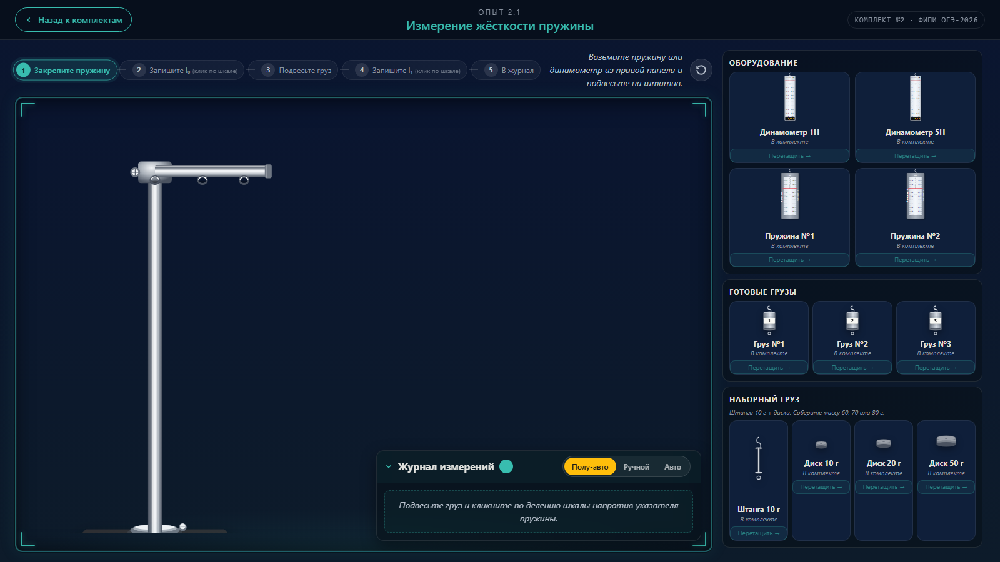
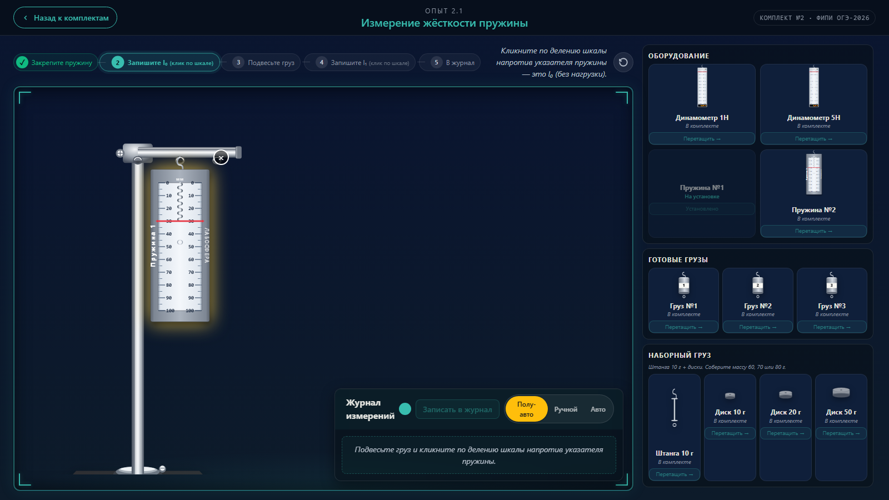
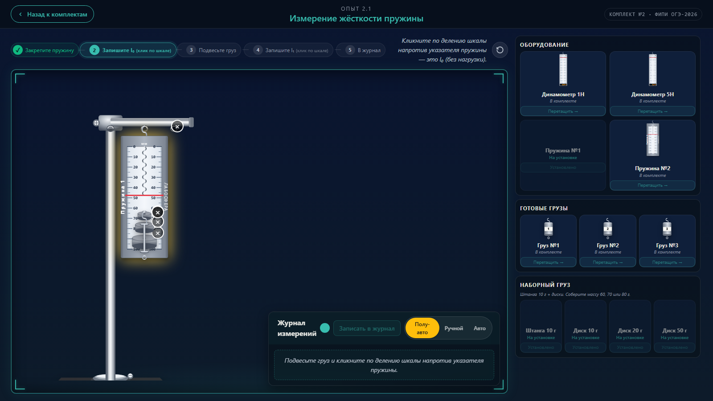

state-3-after-reset
Шаг 3: всё сброшено, drop-zones опять hidden.

✅ ALL PASS
Шаг 0: чистый экран, никаких индикаторов drop-zone.

Шаг 1: пружина подвешена. drop-zone-bottom hidden.

Шаг 2: на пружине штанга и 3 диска в цепочке (chain mode). Стопка плотная (после Iter 1 fix). Никаких подсветок в idle.

Шаг 3: всё сброшено, drop-zones опять hidden.